用于遥感图像语义分割的deeplab v3-pytorch版本
时间：2020-3-8
摘要：deeplab v3 plus作为谷歌开源的一个性能优秀的语义分割模型，官方提供了其tensorflow版本的源代码，但官方版本对于初学者而言十分不友好。同时 ，考虑到pytorch框架的使用者也存在拥有一套基于pytorch框架编写的deeplab v3+源码的需求（源代码关注左侧公众号回复关键字deeplab获取。) 所以，阿柴本次总结从deeplab v3+的原理出发，以对高分辨率遥感图像进行语义分割为目的，结合所写代码，提供对deeplab v3+从理论到实战的深度讲解。
一、数据集介绍
在做一个深度学习的任务时，我们需要记住的一点是：数据才是深度学习的根本所在。所以，我们需要先去了解我们的数据集。
我们将在ISPRS Vaihigen 2D语义标签比赛数据集上评估deeplab v3+的表现。该数据集由33张大小不同的高分辨率遥感影像组成，每张影像都是从德国Vaihigen市高空中获取的真正射影象（TOP）。在某种程度上，这个数据集的遥感影象与普通的自然影像没有差别，他们均是由三个通道组成。
所以，我们可以将其看作是普通图片。数据集还包括与每个影像对应的归一化数字表面模型（nDSM）。在这33张图像中，16张提供了精细标注的ground truth，其余17张并未公布ground truth。整个数据集包含六个类别：不透水表面、建筑、低植被、树木、汽车、杂波/背景。我们在下图中展示了部分数据：
| 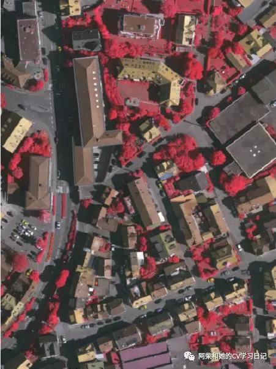 | 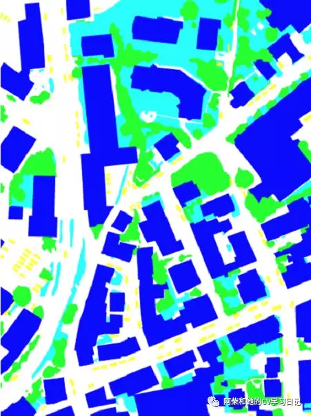 | 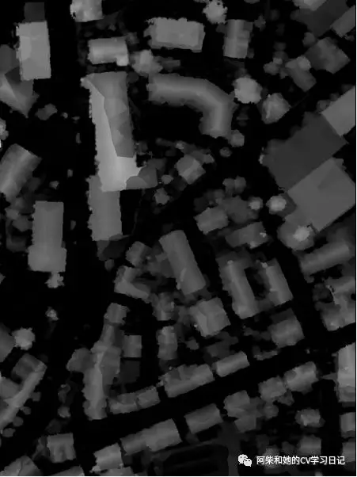 |
在了解完数据集之后（当然上面只是对数据集的初步认识，想要真正了解数据集还得做很多其他的工作，例如：统计每个类别的像素数以了解类别分布是否均衡、分别计算整个数据集所有图像的每个通道上像素值的均值和方差以为后续进行归一化做准备。这里限于篇幅，就不一一介绍了），我们需要划分训练集、验证集、测试集。与大部分已发表的论文一致，我们将ID为1、3、5、7、13、17、21、23、26、32、37这11张图像划分为训练集；将ID为：11、15、28、30、40的图像划分为验证集。剩余图片归为测试集。划分完数据集之后需要对数据进行预处理。
这是因为：1）如果你下载了这个数据集的话，你会发现每一张遥感影像的尺寸是非常大的，基本上都在3000×2000左右。直接将一张整个的遥感图像输入模型是行不通的；2）而另一方面，虽然单个影像尺寸大，但是就这个数据集而言，与cityscape、pascal voc 2012等数据集相比，其数据量又非常少，仅有11张可供训练的图片。所以，基于以上两种原因，我们首先需要进行裁剪以减少单张图片的数据量，然后进行包括反转、施加噪声等在内的数据扩充操作以增大训练样本数量。
最终，我们得到了7000张512×512的训练集以及160张512×512的验证集。处理后的图片如下图所示（ground truth之所以看起来黑乎乎的是因为我们对其进行了预处理使得每个像素的像素值对应其类别，也就是：不透水表面-0；建筑-1；低植被-2；树木-3；汽车-4；杂波/背景-5）：
| 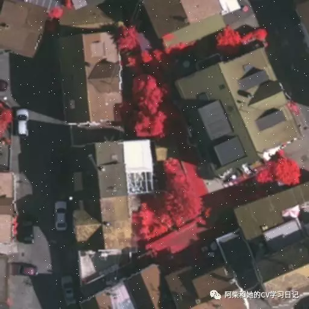 原图 |
GT |
由于处理后的数据集数据量太大以至于超过百度云的最高上传大小限制，所以有兴趣想动手试一下这个实验的同学可以有两种选择：1）不辞幸苦的去官网下数据集，然后自己预处理；2）私聊我们，我们单独给你发处理好的数据集。
二、Deeplab v3+模型简介
这一节我们大致了解一下这个模型。v3+的整体框架如下图所示
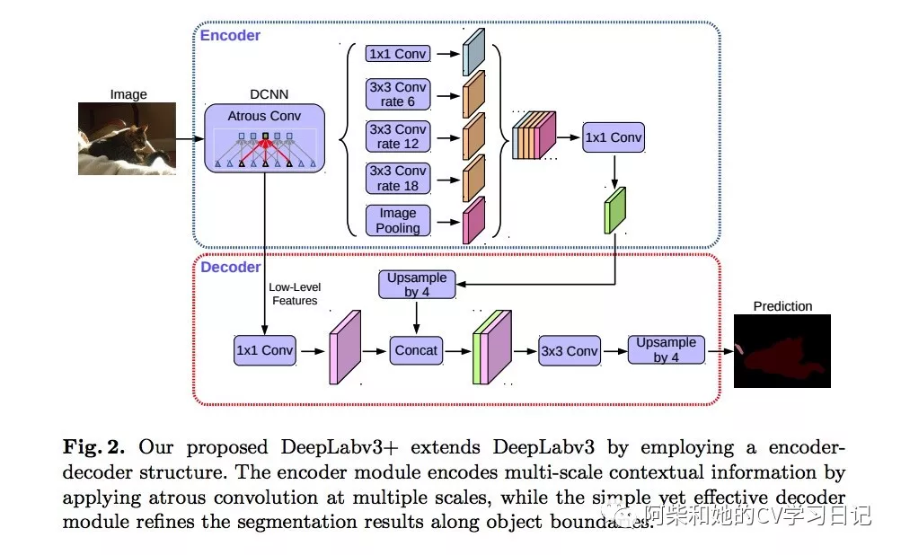我们先看图中DCNN部分。它实际上是ResNet101的结构。具体可以参见下图deeplab v3中的红色方框部分。其中4个block所表示的是ResBlock所搭建的模块。每一个block中所包含的ResBlock的数量按先后顺序依次是3，4，23，3。经过dilated ResNet101的处理之后，得到大小为原图16分之一的特征图，其通道数为2048。特征图的大小正是v3+来改进v3的原因。显而易见，十六分之一大小的特征图如果像v3一样直接上采样到原图大小，细节信息是十分不够的。这也导致了v3预测出来的分割图在边缘上常常令人不是很满意。
基于此，v3+将Conv1+Pool1后的特征图当作Low-Level Features与ASPP后的特征图进行了concat操作。这样，就像v3+的结构图中所表示的一样，十六分之一的特征图由v3中直接上采样到原图大小变为先上采样到四分之一大小与Low-Level Features进行concat操作后再上采样到原图大小。这样，Low-Level Features在这个过程中提供了丰富的细节信息从而使得最后的结果得以优化。
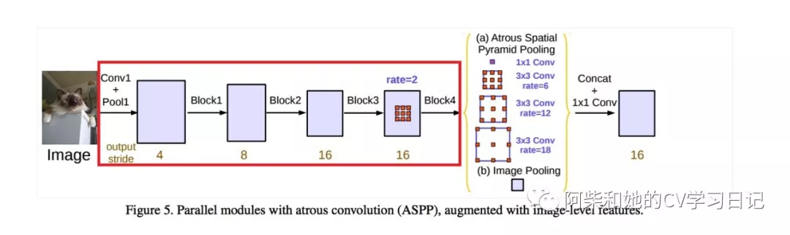三、Deeplab v3+模型实现
欢迎关注左侧公众号回复deeplab获取源代码
3.1、数据读取
PyTorch 读取图片，主要是通过 Dataset 类。我们需要继承Dataset类并且进一步重写里面getitem 函数。getitem的功能在于接收一个 index，然后返回图片数据和标签，这个index 通常指的是一个 list 的 index，这个 list 的每个元素就包含了图片数据的路径信息。和ground truth的路径信息。下面是我们所写的Mydataset类，它继承了Dataset并重写了getitem 函数。
from PIL import Image
from torch.utils.data import Dataset
import pandas as pd
import numpy as np
import torchvision.transforms as transforms
class Mydataset(Dataset):
def __init__(self, path, transform=None, target_transform=None):
'''
:param path: 存储有图片存放地址、对应标签的文件的地址；
:param transform: 定义了各种包括随即裁剪、旋转、仿射等在内的对图像的预处理操作
:param target_transform:
'''
data = pd.read_csv(path) # 获取csv表中的数据
imgs = []
for i in range(len(data)):
imgs.append((data.ix[i,1], data.ix[i,2]))
self.imgs = imgs
self.transform = transform
self.target_transform = target_transform
def __getitem__(self, item):
fn, label = self.imgs[item]
img = Image.open(fn).convert('RGB')
gt = np.array(Image.open(label))
# 进行数据增强，并转换数据格式为tensor
if self.transform is not None:
img = self.transform(img)
#gt = gt.astype(np.long)
return img, gt
def __len__(self):
return len(self.imgs)
if __name__ == "__main__":
# 数据预处理设置
normMean = [0.46099097, 0.32533738, 0.32106236]
normStd = [0.20980413, 0.1538582, 0.1491854]
normTransfrom = transforms.Normalize(normMean, normStd)
transform = transforms.Compose([
transforms.ToTensor(),
normTransfrom,
])
# 构建Mydataset实例
train_data = Mydataset(path='../dataset/train_path_list.csv', transform=transform)
img, gt = train_data.__getitem__(0)
print(img.shape,gt)
3.2、模型构建
我们分三个部分介绍如何构建deeplab v3。
* DCNN部分（ResNet101）
首先先讲一下ResNet101中的基本构成ResBlock。它的结构如下图所示。左图是其原始结构，称为Basic block。在实际使用过程中，考虑计算的成本，对残差块做了计算优化，即将两个3x3的卷积层替换为1x1 + 3x3 + 1x1, 如右图，这种结构称为Bottleneck block。新结构中的中间3x3的卷积层首先在一个降维1x1卷积层下减少了计算，然后在另一个1x1的卷积层下做了还原，既保持了精度又减少了计算量。
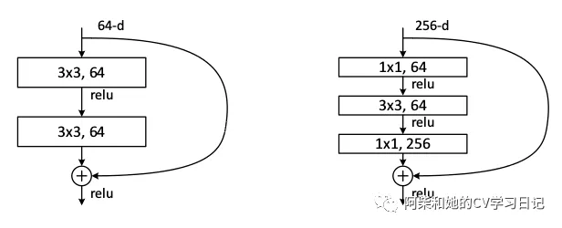这部分的代码包含在deeplab_v3p.py中。如下所示：
class Bottleneck(nn.Module):
expansion = 4
def __init__(self, inplanes, planes, stride=1, rate=1, downsample=None):
super(Bottleneck, self).__init__()
self.conv1 = nn.Conv2d(inplanes, planes, kernel_size=1, bias=False)
self.bn1 = nn.BatchNorm2d(planes)
self.conv2 = nn.Conv2d(planes, planes, kernel_size=3, stride=stride,
dilation=rate, padding=rate, bias=False)
self.bn2 = nn.BatchNorm2d(planes)
self.conv3 = nn.Conv2d(planes, planes * 4, kernel_size=1, bias=False)
self.bn3 = nn.BatchNorm2d(planes * 4)
self.relu = nn.ReLU(inplace=True)
self.downsample = downsample
self.stride = stride
self.rate = rate
def forward(self, x):
residual = x
out = self.conv1(x)
out = self.bn1(out)
out = self.relu(out)
out = self.conv2(out)
out = self.bn2(out)
out = self.relu(out)
out = self.conv3(out)
out = self.bn3(out)
if self.downsample is not None:
residual = self.downsample(x)
out += residual
out = self.relu(out)
return out
在构造完ResBlock之后。我们便可以利用它去搭建我们的ResNet101了。在这之前，我们再回顾一下ResNet101的详细结构。下表中第四列详细的说明ResNet101是如何借助ResBlock搭建的。表中红色方框代表着ResBlock。四个绿色方框表示v3结构图中所表示的block1-block4。所以说每一个block中包含的ResBlock的数目依次是3、4、23、3。有兴趣的同志们可以数一数ResNet101中是不是正好包含101个卷积层，这也是其为什么命名为101的原因。值得注意的是，我们这里不需要ResNet101最后的fc部分。
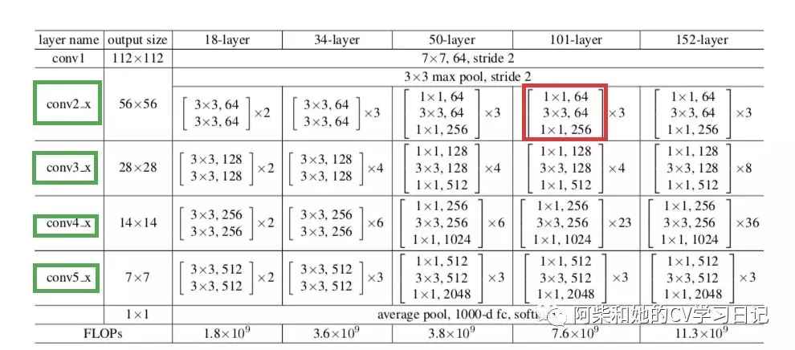这部分的代码包含在deeplab_v3p.py中。如下所示：
class ResNet(nn.Module):
def __init__(self, nInputChannels, block, layers, os=16, pretrained=False):
self.inplanes = 64
super(ResNet, self).__init__()
if os == 16:
strides = [1, 2, 2, 1]
rates = [1, 1, 1, 2]
blocks = [1, 2, 4]
elif os == 8:
strides = [1, 2, 1, 1]
rates = [1, 1, 2, 2]
blocks = [1, 2, 1]
else:
raise NotImplementedError
# Modules
self.conv1 = nn.Conv2d(nInputChannels, 64, kernel_size=7, stride=2, padding=3, bias=False)
self.bn1 = nn.BatchNorm2d(64)
self.relu = nn.ReLU(inplace=True)
self.maxpool = nn.MaxPool2d(kernel_size=3, stride=2, padding=1)
self.layer1 = self._make_layer(block, 64, layers[0], stride=strides[0], rate=rates[0])
self.layer2 = self._make_layer(block, 128, layers[1], stride=strides[1], rate=rates[1])
self.layer3 = self._make_layer(block, 256, layers[2], stride=strides[2], rate=rates[2])
self.layer4 = self._make_MG_unit(block, 512, blocks=blocks, stride=strides[3], rate=rates[3])
self._init_weight()
if pretrained:
self._load_pretrained_model()
def _make_layer(self, block, planes, blocks, stride=1, rate=1):
downsample = None
if stride != 1 or self.inplanes != planes * block.expansion:
downsample = nn.Sequential(
nn.Conv2d(self.inplanes, planes * block.expansion,
kernel_size=1, stride=stride, bias=False),
nn.BatchNorm2d(planes * block.expansion),
)
layers = []
layers.append(block(self.inplanes, planes, stride, rate, downsample))
self.inplanes = planes * block.expansion
for i in range(1, blocks):
layers.append(block(self.inplanes, planes))
return nn.Sequential(*layers)
def _make_MG_unit(self, block, planes, blocks=[1,2,4], stride=1, rate=1):
downsample = None
if stride != 1 or self.inplanes != planes * block.expansion:
downsample = nn.Sequential(
nn.Conv2d(self.inplanes, planes * block.expansion,
kernel_size=1, stride=stride, bias=False),
nn.BatchNorm2d(planes * block.expansion),
)
layers = []
layers.append(block(self.inplanes, planes, stride, rate=blocks[0]*rate, downsample=downsample))
self.inplanes = planes * block.expansion
for i in range(1, len(blocks)):
layers.append(block(self.inplanes, planes, stride=1, rate=blocks[i]*rate))
return nn.Sequential(*layers)
def forward(self, input):
x = self.conv1(input)
x = self.bn1(x)
x = self.relu(x)
x = self.maxpool(x)
x = self.layer1(x)
low_level_feat = x
x = self.layer2(x)
x = self.layer3(x)
x = self.layer4(x)
return x, low_level_feat
def _init_weight(self):
for m in self.modules():
if isinstance(m, nn.Conv2d):
# n = m.kernel_size[0] * m.kernel_size[1] * m.out_channels
# m.weight.data.normal_(0, math.sqrt(2. / n))
torch.nn.init.kaiming_normal_(m.weight)
elif isinstance(m, nn.BatchNorm2d):
m.weight.data.fill_(1)
m.bias.data.zero_()
def _load_pretrained_model(self):
pretrain_dict = torch.load("utils/resnet101-5d3b4d8f.pth", map_location=torch.device('cpu'))
model_dict = {}
state_dict = self.state_dict()
for k, v in pretrain_dict.items():
if k in state_dict:
model_dict[k] = v
state_dict.update(model_dict)
self.load_state_dict(state_dict)
def ResNet101(nInputChannels=3, os=16, pretrained=False):
model = ResNet(nInputChannels, Bottleneck, [3, 4, 23, 3], os, pretrained=pretrained)
return model
ResNet101构造完成后，我们将会得到一个尺寸为原图16分之一大小（或者是8分之一大小。代码中os参数便是用于选择8分之一或者16分之一的）我们需要将其送入ASPP中以获得多尺度的上下文信息。在此之前，我们先看一下ASPP的详细结构（图中红色方框部分）：
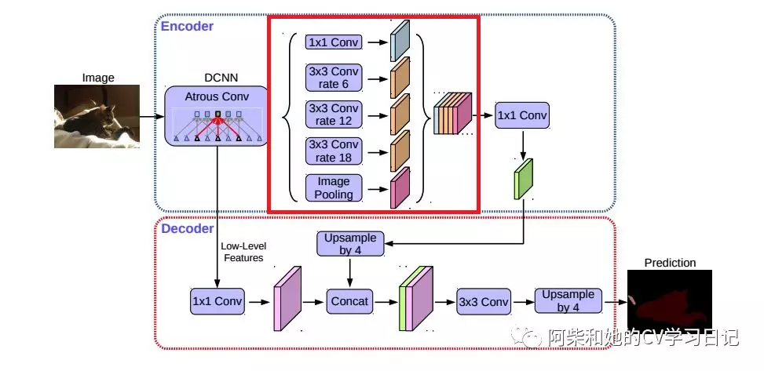ASPP模块主要包含以下几个部分：1） 一个1×1卷积层，以及三个3x3的空洞卷积，对于os=16，其rate为(6, 12, 18) ，若os=8，rate加倍（这些卷积层的输出channel数均为256，并且含有BN层）；（2）一个全局平均池化层得到image-level特征，然后送入1x1卷积层（输出256个channel），并双线性插值到原始大小；（3）将（1）和（2）得到的4个不同尺度的特征在channel维度concat在一起，然后送入1x1的卷积进行融合并得到256-channel的新特征。
ASPP输出的特征图上采样到原图四分之一大小，然后与Conv1+Pool1后的特征图concat。值得注意的是在concat之前应该对Conv1+Pool1后的特征图进行1×1的卷积使其通道数变为48。concat后的特征图随后再次进行上采样，使其恢复原图大小。同时利用卷积，其通道数变为数据集对应类别数，也就是6。
这部分的代码包含在deeplab_v3p.py中。如下所示：
class ASPP_module(nn.Module):
def __init__(self, inplanes, planes, rate):
super(ASPP_module, self).__init__()
if rate == 1:
kernel_size = 1
padding = 0
else:
kernel_size = 3
padding = rate
self.atrous_convolution = nn.Conv2d(inplanes, planes, kernel_size=kernel_size,
stride=1, padding=padding, dilation=rate, bias=False)
self.bn = nn.BatchNorm2d(planes)
self.relu = nn.ReLU()
self._init_weight()
def forward(self, x):
x = self.atrous_convolution(x)
x = self.bn(x)
return self.relu(x)
def _init_weight(self):
for m in self.modules():
if isinstance(m, nn.Conv2d):
# n = m.kernel_size[0] * m.kernel_size[1] * m.out_channels
# m.weight.data.normal_(0, math.sqrt(2. / n))
torch.nn.init.kaiming_normal_(m.weight)
elif isinstance(m, nn.BatchNorm2d):
m.weight.data.fill_(1)
m.bias.data.zero_()
class DeepLabv3_plus(nn.Module):
def __init__(self, nInputChannels=3, n_classes=21, os=16, pretrained=False, _print=True):
if _print:
print("Constructing DeepLabv3+ model...")
print("Number of classes: {}".format(n_classes))
print("Output stride: {}".format(os))
print("Number of Input Channels: {}".format(nInputChannels))
super(DeepLabv3_plus, self).__init__()
# Atrous Conv
self.resnet_features = ResNet101(nInputChannels, os, pretrained=pretrained)
# ASPP
if os == 16:
rates = [1, 6, 12, 18]
elif os == 8:
rates = [1, 12, 24, 36]
else:
raise NotImplementedError
self.aspp1 = ASPP_module(2048, 256, rate=rates[0])
self.aspp2 = ASPP_module(2048, 256, rate=rates[1])
self.aspp3 = ASPP_module(2048, 256, rate=rates[2])
self.aspp4 = ASPP_module(2048, 256, rate=rates[3])
self.relu = nn.ReLU()
self.global_avg_pool = nn.Sequential(nn.AdaptiveAvgPool2d((1, 1)),
nn.Conv2d(2048, 256, 1, stride=1, bias=False),
nn.ReLU())
self.conv1 = nn.Conv2d(1280, 256, 1, bias=False)
self.bn1 = nn.BatchNorm2d(256)
# adopt [1x1, 48] for channel reduction.
self.conv2 = nn.Conv2d(256, 48, 1, bias=False)
self.bn2 = nn.BatchNorm2d(48)
self.last_conv = nn.Sequential(nn.Conv2d(304, 256, kernel_size=3, stride=1, padding=1, bias=False),
nn.BatchNorm2d(256),
nn.ReLU(),
nn.Conv2d(256, 256, kernel_size=3, stride=1, padding=1, bias=False),
nn.BatchNorm2d(256),
nn.ReLU(),
nn.Conv2d(256, n_classes, kernel_size=1, stride=1))
def forward(self, input):
x, low_level_features = self.resnet_features(input)
x1 = self.aspp1(x)
x2 = self.aspp2(x)
x3 = self.aspp3(x)
x4 = self.aspp4(x)
x5 = self.global_avg_pool(x)
x5 = F.upsample(x5, size=x4.size()[2:], mode='bilinear', align_corners=True)
x = torch.cat((x1, x2, x3, x4, x5), dim=1)
x = self.conv1(x)
x = self.bn1(x)
x = self.relu(x)
x = F.upsample(x, size=(int(math.ceil(input.size()[-2]/4)),
int(math.ceil(input.size()[-1]/4))), mode='bilinear', align_corners=True)
low_level_features = self.conv2(low_level_features)
low_level_features = self.bn2(low_level_features)
low_level_features = self.relu(low_level_features)
x = torch.cat((x, low_level_features), dim=1)
x = self.last_conv(x)
x = F.upsample(x, size=input.size()[2:], mode='bilinear', align_corners=True)
return x
3.3、训练模型
搭建完模型后我们便要开始对模型进行训练。这部分的代码包含在deeplab_v3p_train.py中.这一部分代码很好理解便不详细讲述。这里提一下我们的参数设置：初始学习率为0.001，每隔5个epoch乘以0.5。我们一共在一张1080ti上训练了50个epoch。损失函数选择的是加权交叉熵。权重统计每个类别像素数之后由utils文件夹中对应脚本计算而来。以下是代码（其中有Dataloader的用法）：
import torch
import torchvision.utils as vutils
import numpy as np
import os
from torch.autograd import Variable
import torch.nn as nn
import torch.optim as optim
from tensorboardX import SummaryWriter
from utils.data_utils import Mydataset
from torch.utils.data import DataLoader
import torchvision.transforms as transforms
from datetime import datetime
from deeplab_v3p import DeepLabv3_plus
import tensorflow as tf
from sklearn.metrics import accuracy_score
os.environ["CUDA_VISIBLE_DEVICES"] = "0"
tf.logging.set_verbosity(tf.logging.INFO)
class args:
train_path = 'dataset/train_path_list.csv'
val_path = 'dataset/val_path_list.csv'
result_dir = 'Result/'
batch_size = 2
learning_rate = 0.001
max_epoch = 50
best_train_acc = 0.80
now_time = datetime.now()
time_str = datetime.strftime(now_time,'%m-%d_%H-%M-%S')
log_dir = os.path.join(args.result_dir,time_str)
if not os.path.exists(log_dir):
os.makedirs(log_dir)
writer = SummaryWriter(log_dir)
#---------------------------1、加载数据---------------------------
#数据预处理设置
normMean = [0.46099097, 0.32533738, 0.32106236]
normStd = [0.20980413, 0.1538582, 0.1491854]
normTransfrom = transforms.Normalize(normMean, normStd)
transform = transforms.Compose([
transforms.ToTensor(),
normTransfrom,
])
#构建Mydataset实例
train_data = Mydataset(path=args.train_path,transform=transform)
val_data = Mydataset(path=args.val_path,transform=transform)
#构建DataLoader
train_loader = DataLoader(dataset=train_data, batch_size=args.batch_size, shuffle=True)
val_loader = DataLoader(dataset=val_data, batch_size=args.batch_size, shuffle=True, drop_last=True)
#---------------------------2、定义网络---------------------------
net = DeepLabv3_plus(nInputChannels=3, n_classes=6, os=8, pretrained=True, _print=True)
net.cuda()
#---------------------------3、初始化预训练权重、定义损失函数、优化器、设置超参数、---------------------------
if torch.cuda.is_available():
w = torch.Tensor([0.71280016, 0.77837713, 0.93428148, 1.0756635, 16.18921045, 28.26338505]).cuda()
else:
w = torch.Tensor([0.71280016, 0.77837713, 0.93428148, 1.0756635, 16.18921045, 28.26338505])
criterion = nn.CrossEntropyLoss(weight= w).cuda() #选择损失函数
optimizer = optim.SGD(net.parameters(),lr=args.learning_rate,momentum=0.9,dampening=0.1)
scheduler = torch.optim.lr_scheduler.StepLR(optimizer=optimizer,step_size=10,gamma=0.5)
#4、---------------------训练网络---------------------------
for epoch in range(args.max_epoch):
loss_sigma = 0.0
acc_sigma = 0.0
loss_val_sigma = 0.0
acc_val_sigma = 0.0
net.train()
for i,data in enumerate(train_loader):
inputs, labels = data
inputs = Variable(inputs.cuda())
labels = Variable(labels.cuda())
labels = labels.long().cuda()
optimizer.zero_grad()
outputs = net.forward(inputs)
loss = criterion(outputs, labels)
predicts = torch.argmax(outputs, dim=1)
acc_train = accuracy_score(np.reshape(labels.cpu(),[-1]),np.reshape(predicts.cpu(),[-1]))
loss.backward()
optimizer.step()
# 统计预测信息
loss_sigma += loss.item()
acc_sigma += acc_train
if i % 10 == 9 :
loss_avg = loss_sigma /10
acc_avg = acc_sigma/10
loss_sigma = 0.0
acc_sigma = 0.0
tf.logging.info("Training:Epoch[{:0>3}/{:0>3}] Iter[{:0>3}/{:0>3}] Loss:{:.4f} Acc:{:.4f}".format(
epoch + 1, args.max_epoch,i+1,len(train_loader),loss_avg,acc_avg))
writer.add_scalar("LOSS", loss_avg, epoch)
writer.add_scalar("LEARNING_RATE", scheduler.get_lr()[0], epoch)
# 保存模型
if (acc_avg) > best_train_acc:
# 保存acc最高的模型
net_save_path = os.path.join(log_dir, 'net_params.pkl')
torch.save(net.state_dict(), net_save_path)
best_train_acc = acc_avg
tf.logging.info('Save model successfully to "%s"!' % (log_dir + 'net_params.pkl'))
net.eval()
for i, data in enumerate(val_loader):
inputs, labels = data
inputs = Variable(inputs.cuda())
labels = Variable(labels.cuda())
labels = labels.long().cuda()
with torch.no_grad():
outputs = net.forward(inputs)
predicts = torch.argmax(outputs, dim=1)
acc_val = accuracy_score(np.reshape(labels.cpu(), [-1]), np.reshape(predicts.cpu(), [-1]))
loss_val = criterion(outputs, labels)
# 统计预测信息
loss_val_sigma += loss_val.item()
#acc_val_sigma += acc_val
tf.logging.info("After 1 epoch：acc_val:{:.4f},loss_val:{:.4f}".format(acc_val_sigma/(len(val_loader)), loss_val_sigma/(len(val_loader))))
acc_val_sigma = 0.0
loss_val_sigma = 0.0
writer.close()
net_save_path = os.path.join(log_dir,'net_params_end.pkl')
torch.save(net.state_dict(),net_save_path)
四、Deeplab v3+模型预测效果
模型训练完毕后，运行predict.py可以对测试集图片进行预测(这个脚本如何实现其预测的功能我们将会在后续实战篇中-多尺度测试中进行讲解）。可视化效果如下：
| 原图 | 预测图 |
| 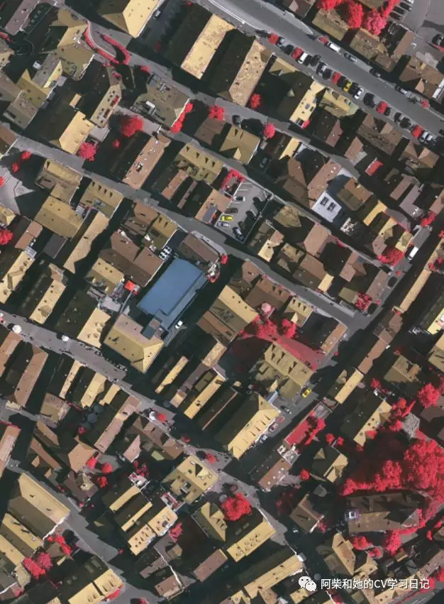 | 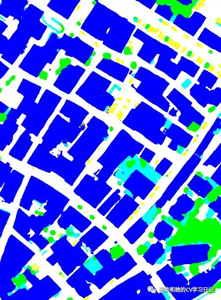 |
| 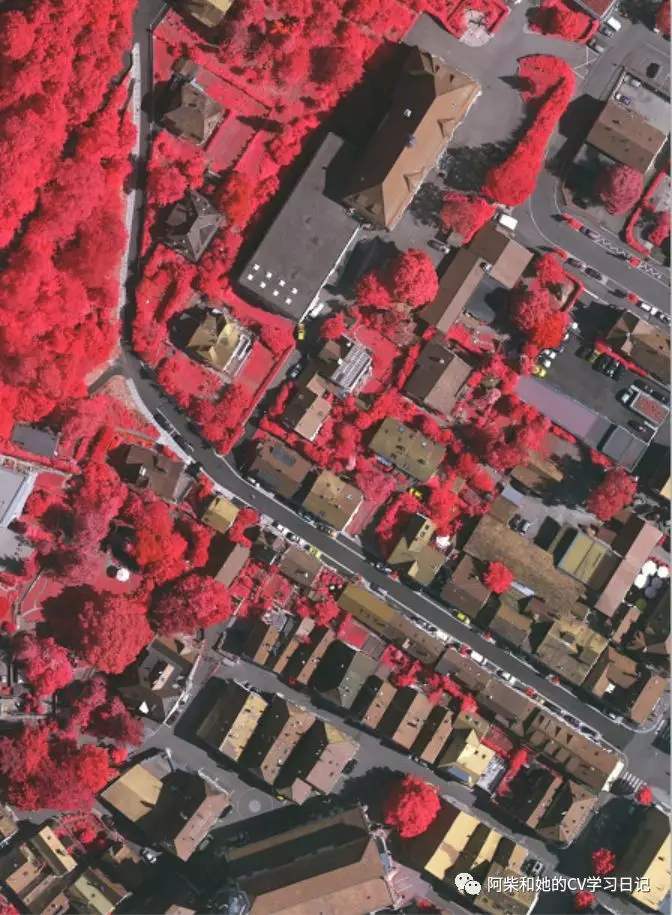 | 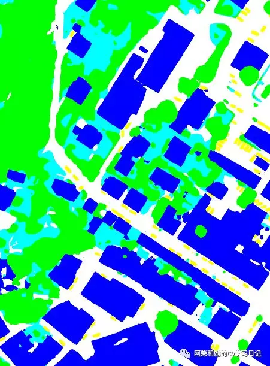 |
| 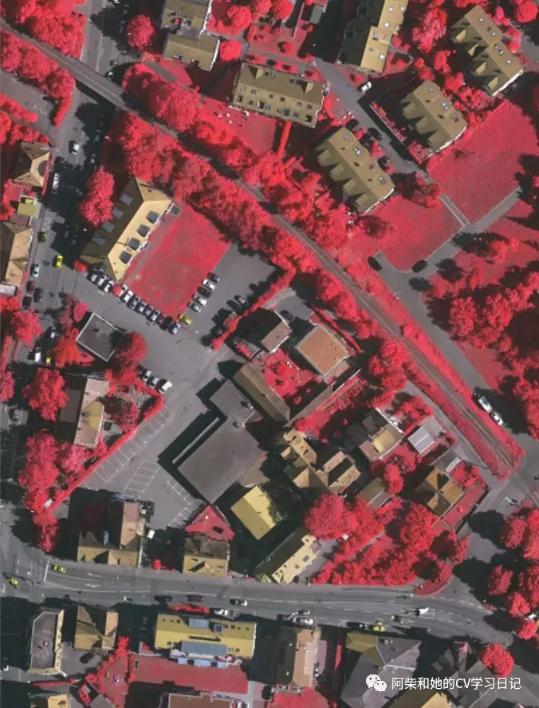 | 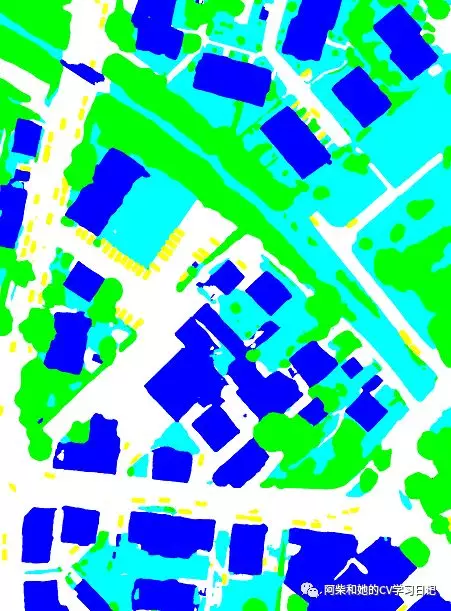 |